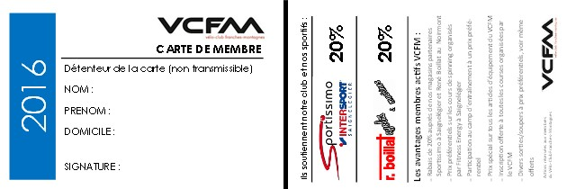
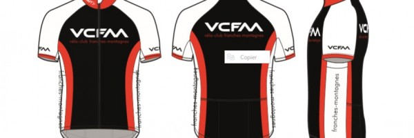

Club
Le VCFM est un club dynamique et ambitieux qui se veut actif dans la promotion du cyclisme et du VTT dans notre région. Avec son école de cyclisme, il est également un club formateur auprès de notre jeunesse.
Formulaire de contact
Devenir membre
Les Franches-Montagnes
Avec ses paysages doux, ses vastes prairies boisées, ses majestueux sapins ou encore sa vallée du Doubs, la région se prête à merveille à la détente. En dehors des grands axes bruyants, il est possible de passer des heures à « écouter » le calme avec un fond sonore de bruissement des feuilles, quelques hennissements de chevaux ou encore le clapotis d'un ruisseau.

Les Franches-Montagnes se situent entre le canyon resserré du Doubs et le vallon de Saint-Imier, là où les chaînons successifs du Jura perdent progressivement de l'altitude en allant vers l'ouest. Elles forment, à l'altitude de 1000 à 1100 mètres, un plateau de 200 kilomètres carrés. L'érosion, très avancée, a nivelé montagnes et vallées jusqu'à les rendre difficilement repérables. Les rides allongées émergeant ici ou là ne sont pas des plis, mais seulement les restes plus résistants de couches calcaires non encore aplanies. Malgré des précipitations atteignant 100 à 110 centimètres, la contrée est pauvre en cours d'eau. Les emposieux et les dolines, souvent disposés en alignement, les entonnoirs où s'engouffrent les eaux sont fréquents. Pourtant, de nombreuses cuvettes tapissées d'argile imperméable dissimulent de petits lacs ou étangs dont les eaux s'écoulent et disparaissent dans les profondeurs en des endroits généralement connus. II en est ainsi pour l'Étang de la Gruère. Ses eaux, mêlées aux eaux d'infiltration de la région, réapparaissent 16 heures plus tard et 4 kilomètres plus loin, à Tramelan, sous forme de résurgence. Le climat du haut plateau est rude, les hivers sont longs et la période de végétation estivale ne dure que quatre à cinq mois. Les conditions expliquent pourquoi l'occupation principale des habitants est l'élevage du bétail.(Source wikipedia)
Membres du comité
Président: Pascal Mercier
Vice-président: Michael Barraud
Caissier: Mathieu Willemin
Membres:
Paul Dubail
Thomas Salzmann
Marc Dubois (école de cyclisme)
Sébastien Froidevaux (école de cyclisme)
Guillaume Berbier (intendance)
PV Assemblées
PV des assemblées à télécharger :
2016 2017 2018 2019 2020 2022Carte membre
Le VCFM est un club dynamique et ambitieux qui se veut actif dans la promotion du cyclisme et du VTT dans notre région. Avec son école de cyclisme, il est également un club formateur auprès de notre jeunesse. Vous pouvez nous aider et participer à son succès en consacrant un peu de votre temps à la réalisation des objectifs de notre société. D'avance merci à vous pour votre engagement !
- Vous recevez la carte de membre 2023 qui vous offre de multiples avantages:
- Prix spécial sur tous les vêtements été/hiver du VCFM. La collection est disponible chez Sébastien et Marianne Froidevaux (tél. 078 765 54 33).
- Rabais de 5 à 20% auprès de nos magasins partenaires Sportissimo Intersport à Saignelégier et Joris Boillat Cycles au Noirmont.
- Participation au camp d'entraînement à un prix préférentiel.
- Prix préférentiels sur les cours de spinning organisés par Fitness Energy à Saignelégier.
- Inscription offerte à toutes les courses organisées par le VCFM.
- Contribution forfaitaire allouée aux classés du général du TJ et/ou de la Coupe AIJC.
- Divers sorties/soupers à prix préférentiels, voir même offerts.
Equipement VCFM
Vous trouverez tous les articles disponibles sur demande chez Sébastien et Marianne Froidevaux (tél. 078 765 54 33)
Liste de prix
Nouveaux vêtements
Anciens vêtements
Rabais spécial liquidation 50%